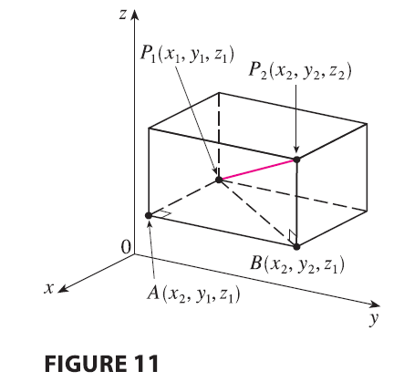

The familiar formula for the distance between two points in a plane is easily extended to the following three-dimensional formula.
Distance Formula in Three Dimensions The distance \(|P_1P_2|\) between the points \(P_1(x_1, y_1, z_1)\) and \(P_2(x_2, y_2, z_2)\) is \[ |P_1P_2| = \sqrt{(x_2 - x_1)^2 + (y_2 - y_1)^2 + (z_2 - z_1)^2} \]

To see why this formula is true, we construct a rectangular box as in Figure 11, where \(P_1\) and \(P_2\) are opposite vertices and the faces of the box are parallel to the coordinate planes. If \(A(x_2, y_1, z_1)\) and \(B(x_2, y_2, z_1)\) are the vertices of the box indicated in the figure, then \[ |P_1A| = |x_2 - x_1| \quad |AB| = |y_2 - y_1| \quad |BP_2| = |z_2 - z_1| \] Because triangles \(P_1BP_2\) and \(P_1AB\) are both right-angled, two applications of the Pythagorean Theorem give \[ |P_1P_2|^2 = |P_1B|^2 + |BP_2|^2 \] and \[ |P_1B|^2 = |P_1A|^2 + |AB|^2 \] Combining these equations, we get \[ |P_1P_2|^2 = |P_1A|^2 + |AB|^2 + |BP_2|^2 = |x_2 - x_1|^2 + |y_2 - y_1|^2 + |z_2 - z_1|^2 \] \[ = (x_2 - x_1)^2 + (y_2 - y_1)^2 + (z_2 - z_1)^2 \] Therefore \[ |P_1P_2| = \sqrt{(x_2 - x_1)^2 + (y_2 - y_1)^2 + (z_2 - z_1)^2} \]
EXAMPLE 4 The distance from the point \(P(2, -1, 7)\) to the point \(Q(1, -3, 5)\) is \[ |PQ| = \sqrt{(1 - 2)^2 + (-3 - (-1))^2 + (5 - 7)^2} = \sqrt{1 + 4 + 4} = 3 \]
EXAMPLE 5 Find an equation of a sphere with radius \(r\) and center \(C(h, k, l)\).
Equation of a Sphere An equation of a sphere with center \(C(h, k, l)\) and radius \(r\) is \[ (x - h)^2 + (y - k)^2 + (z - l)^2 = r^2 \] In particular, if the center is the origin \(O\), then an equation of the sphere is \[ x^2 + y^2 + z^2 = r^2 \]
EXAMPLE 6 Show that \(x^2 + y^2 + z^2 + 4x - 6y + 2z + 6 = 0\) is the equation of a sphere, and find its center and radius.
EXAMPLE 7 What region in \(\mathbb{R}^3\) is represented by the following inequalities? \[ 1 \le x^2 + y^2 + z^2 \le 4 \quad z \le 0 \]